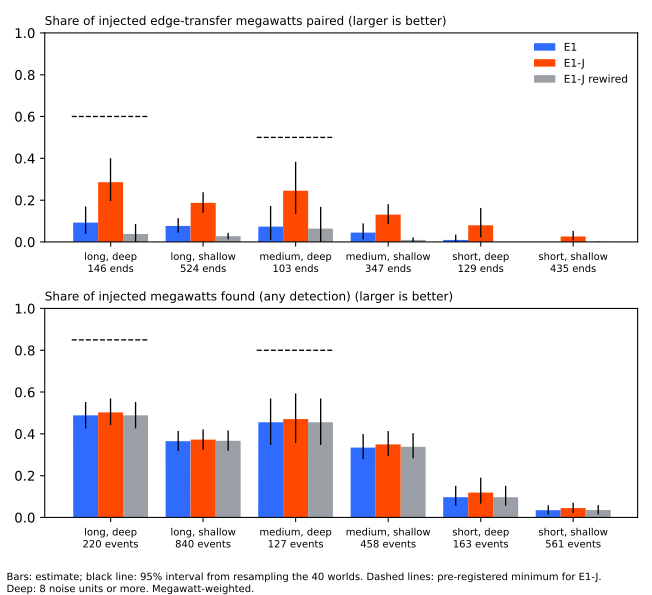

Load-shift event detection: state at the January pause
The event table E1 finds about two thirds of the megawatts of long, deep injected load transfers,
but the best detector, E1-J-sym, names both Primaries of a transfer for under 0.40 of those
megawatts, and 77% of the transfers it decodes are false. The maintainer paused this work after
2026-11-10 and plans to restart it in January. This page records where the work stands, which
findings the merged pages do not carry yet, and the options for the restart. Each option is a
proposal, not a commitment. The event-table summary explains the line of
work in plain words, and the research plan holds the queue. Specs for the restart are
copied into january-restart-specs/ (see where the specs went), so a
reader does not need the private briefs folder.
Terms. A load transfer is a switching operation that moves part of one Primary substation's demand (the donor) onto neighbouring Primaries (the recipients) for hours or days. E1 is the event table of experiment 653. E1-J adds the recipient search of experiment 670. E1-J-sym adds the search from each unpaired rise of experiment 680. Found means an injected event has a decoded event at the right Primary, with the right sign and start. Paired means the decoded donor and recipient are the right two Primaries. Both shares are weighted by megawatts. A long and deep transfer lasts over 7 days and steps 8 noise units or more. A medium and deep transfer lasts 1 to 7 days and steps 8 noise units or more. Unless a paragraph says otherwise, results come from 15 Primaries and from injected transfers, because the real record holds almost no verified long transfers. A noise unit is a Primary's usual difference between successive 6-hour means. A cell is one combination of transfer length and depth. NGED is the distribution network operator, PV is photovoltaic solar generation, and D3, D5, D8, D10, D12, D16, and D22 are anonymised Primary identifiers. A decoded transfer is false when it matches no injected end, and an end is one Primary's side of an injected transfer. A rewired graph keeps each Primary's number of neighbours but connects it to random Primaries. NGED's event labels are an incomplete dump, so a Primary's clean rows may hold unlabelled events and every count of real events is a lower bound.
State at the pause
Of the detectors tested, E1-J-sym pairs the most megawatts, but it pairs under 0.40 even for long, deep transfers. In the long and deep cell, E1 finds 0.67 of the injected megawatts (experiment 665). E1-J pairs 0.29 of them, and E1-J-sym pairs 0.38 (experiment 680). In the medium and deep cell, E1-J pairs 0.25 and E1-J-sym pairs 0.32. A rewired graph removes the gain of both searches, so the gain comes from the real neighbours. The shared simulator that creates the injected transfers (experiment 660) cannot be told apart from 49 real windows (area under the curve 0.55), which rules out gross differences and nothing finer.
Five findings limit the detector.
- Pairing stays below 0.40. The graph neural network of experiment 672 pairs 0.08. The donor-probe hybrids of experiment 678 pair 0.36 at best. The edge-state neural network of experiment 676 pairs 0.32, and a copy of that neural network with no links between Primaries also pairs 0.32.
- The donor is the bottleneck. In experiment 675, 0.87 of the recipient megawatts that E1-J located but left unpaired belonged to transfers whose donor E1-J had not found. Masked pretraining made the donor probe worse.
- Short events are not paired. Transfers of a day or less pair 0.08 (deep) and 0.03 (shallow) of their megawatts (experiment 676, post hoc arms of its part A).
- False transfers are common. Of E1-J's decoded transfers, 69% match no injected end (experiment 670). E1-J-sym decodes 442 more transfers than E1-J, for 63 more correct ends. The detector spec gives the false-transfer share as 0.69 for E1-J and 0.77 for E1-J-sym.
- A fixed cost per change does not separate true pairs from coincident ones. The edge-flow reconstruction method of experiment 682 accepts 2,990 transfers for 329 correct ends, and a graph that links any two Primaries pairs 0.32 against 0.33 for the real graph.
Two closures are final. Two further stop rules were met by small margins, and the maintainer chose to continue. Experiments 676 and 682 are final closures: the learnt-graph line of work and the edge-flow line of work are closed at 15 Primaries. The first small margin is experiment 670's pairing of 0.29 in the long and deep cell against a stop line of 0.30 (its leave-one-out range was 0.26 to 0.31). The second is experiment 680's gain of +0.094 against the +0.10 needed to adopt the symmetric search. The 0.29 against 0.30 comparison belongs to experiment 670, not to experiment 672.

On the real record the evidence is thin. The one verified transfer between D5 and D16 (December 2025) is paired in the right direction, but the decoded starts are late. None of the 77 logged shifts longer than 1 day falls in the long and deep type (experiment 665).
Timing of the two ends of a transfer
The fitted gaps between the two ends of a verified transfer are small, and at D5 and D16 the interval is too wide to exclude the 14.5 to 15 hour gap between labelled times that experiment 660 reported. Experiment 686 fitted both Primaries in one window at each verified transfer. At D3 and D22 (October 2024) the fitted gaps are -0.5 hours at the onset and -2.0 hours at the end. At D5 and D16 (December 2025) the end gap is 2.5 hours and the onset gap is 2.0 hours with a 90% interval of -13.0 to 16.5 hours, so the interval cannot exclude a lag of 15 hours. The fit misplaces a truly simultaneous step by 2 hours or more in 3% to 25% of windows, worst at D5 and D16. Experiment 660's lag of 14.5 and 15 hours is the gap between the two Primaries' labelled times, not a fitted lag. A scorer that requires both ends to coincide needs a tolerance of at least 2 hours (4 half-hours), tested on injected worlds.
Solar growth causes 333 false events in the injected worlds, and a better solar-capacity curve would remove only part of them. Of the 333, 5% are steps inside a sunny run (95% interval 3% to 8%), 79% fail the step test, and 52% last 3 days or less.
Forecast heads that follow a new load shift sooner
Extra lagged power inputs make the prevailing output follow a new shift about 20 hours sooner, and the detector's statistics are not shown to do better. The prevailing output of the two-output demand neural network forecasts demand including any shift in force, and the small head is the neural network that corrects it. NRA is the normal running arrangement. Experiment 681 gave the prevailing head 14 extra lagged inputs. The start-of-shift reaction time fell by 20.4 hours (95% interval 16.3 to 24.8), and the NRA output was unchanged. The page marks the extra inputs as a candidate that no model adopts yet. Experiment 687 found that detector features react 1.59 days sooner than experiment 652's head (interval -2.26 to -1.00), the extra lags react 1.25 days sooner, and the features-minus-lags difference is -0.33 days (-0.72 to +0.07). The features are not shown to beat the lags. The placebo arm is invalid, because every Primary is shifted at once in the banks, so prediction P5 (the placebo gains less than a third of the features arm's gain) is untested.
Experiment 691 gave the head both the features and the extra lags (arm FL1). FL1 reacts 1.75 days sooner than experiment 652's head, but only 0.16 days sooner than the features alone (interval -0.45 to +0.14), below the pre-registered 0.5-day gain, so the lags add under 0.5 days to the features. The in-force score gain is 0.20 points of capacity, below the 0.30 bar, and false alarms on event-free injected rows rise by 5.1 points.
Findings the merged pages do not carry yet
Four items below appear on no merged page. The first, a re-analysis of experiment 651's outputs, has not been audited. They come from Discuss sessions (the maintainer's planning conversations) and from the maintainer.
- The FLOW-E audit (unaudited). The D10 episode of 8 to 12 December 2025 carries about 62% of
FLOW-E's extra CRPS at the six MW Primaries (the continuous ranked probability score; experiment
651's graph arm). FLOW-E minus G0 is +0.022 points of capacity at the six MW Primaries and +0.003
without D10's rows for 1 to 16 December 2025. G0's excess over the A1 arm is +0.141 on all rows
and +0.078 without that episode. FLOW-E's follow gain needs a metered mirror: on the bank with no
mirror, FLOW-E follows 0.059, exactly G0's figure. NGED's labels mark the D10 rows event-free, so
the episode may be an unlabelled event, which nobody has verified. Source:
flow-e-next-experiments.md. - No register gives a solar capacity curve. Step 1 of part B1 of the detector spec cannot be built as written, because the three registers it names (the Feed-in Tariff, the Embedded Capacity Register, and the Renewable Energy Planning Database) do not record recent domestic PV, and NGED removed metered generation from the Primary data. We found no other register-based capacity trajectory.
- NGED's "Reverse Power Flow?" column is a hint. The column is in
Monitor Direction.csv(a private file). The column says "Yes" for D8, "Maybe" for D12 and D22, and "No" for five other MVA Primaries. The column conflicts with the telemetry at D8, D12, and D22 (mva-reverse-flow-hard-mask.md). - The maintainer's decisions. The maintainer favours testing a hard PV mask for MVA reverse flow beside a soft prior. D8's gas generator is the large-generator case. The reviewer of detector check 4 (part C of the detector spec) is one Sonnet agent. A learnt scorer combines the logistic regression with E1-J-sym.
- A Sonnet reviewer failed the pre-registered gate on injected truth, which holds real-record events, so the result is inconclusive. Experiment 692 gave the reviewer 102 figures, and its precision was 0.45 against the gate of 0.80 (at recall 0.75). Post hoc, found after the answers were read, 21 of its 29 false calls were on five candidates that recur in the real record under many injected worlds, and without them precision is 0.75 (interval 0.58 to 0.87), still under 0.80. The new data-processing rule (medium confidence) says to drop such candidates before scoring on injected truth.
- Experiment 685's event table stays private. Its rows are in the private data folder only (experiment 685 found 13 candidate events from 2026-07-01 to 2026-10-31 and none that explains the one-year-backtest flags at four Primaries).
Not started, parked
Six of the seven options below have not started, and the learnt scorer is the one with the most preparation. Option 2, the reviewer's gate (part C of the detector spec), has run in a reduced form as experiment 692 (102 blinded figures, not 400). FLOW-C, FLOW-P, and FLOW-H are the three FLOW-E proposals of the Opus sub-agent, and only FLOW-C is in the ranked table, as option 6. The causal-features test on the production forecast heads goes beyond experiment 687.
January restart, ranked
Seven options are ranked below, and the maintainer has not yet chosen among them. The ranking is the Discuss session's view.
| Rank | Option | Question | Cost | Depends on |
|---|---|---|---|---|
| 1 | Learnt candidate scorer over E1-J-sym's candidates | Does a logistic regression, then small trees, on timing, shape, and context features cut the false-transfer share to 0.45 or less without losing paired share? | About 5 to 9 CPU-hours (spec estimate) | Experiments 660, 675, and 680; part A of the detector spec |
| 2 | The one-Sonnet reviewer against the candidates | Does a reviewer reach 0.80 precision at 0.60 recall on a blinded calibration set? Experiment 692 (102 figures): the pre-registered gate failed (precision 0.45 at recall 0.75); post hoc (found after the answers were read), without five real-record candidates that the injected truth omits, precision is 0.75, still under the 0.80 gate. | About 5 million tokens (spec estimate, made for two Sonnet reviewers plus Opus) | A scorer's candidates and the calibration set; part C |
| 3 | The neural lag-free year-fold residual with explicit PV | Does a residual built from a neural cross-fit lower the noise unit or the event-free decoded rate against arm C? | About 1.5 GPU-hours (ceiling 2 GPU-hours) | Part B; the maintainer's backtests keep GPU priority |
| 4 | Causal detector features for the lag encoder and the prevailing head | Do the features help the production heads beyond the extra lags of experiment 681? (Experiment 691: features and lags together add under 0.5 days over the features alone.) | About 2 GPU-hours for the fine-tune, after a CPU test | Experiment 687; part D |
| 5 | The MVA sign label with the hard-mask arm and the D8 gas-generator state | Does a per-Primary masked day labeller recover reverse flow at the eight apparent-power Primaries? | CPU only, zero fits | The MVA spec; no known answer at D12's export level |
| 6 | FLOW-C | Does FLOW-E keep a lower follow than G0 across five months, against a rewired placebo? | About 6 GPU-hours | Only if the forecast side still wants FLOW-E |
| 7 | Graph-learnt models | Do learnt graph models pair better with more data? | Not estimated | Fleet adjacency from NGED, or more verified events |
Option 1 comes first because experiment 682 showed that the detector's problem is precision. A cost per change cannot tell a true pair from a coincident one, and timing and shape features might. The donor limits how many pairs are found, and the false-transfer share is a separate precision problem that option 1 targets. Option 2 follows because the reviewer's precision has to be measured before it cuts false positives, and experiment 692's measurement needs a calibration set free of real-record events. Option 5 runs on CPU alone. Options 6 and 7 are the least likely to improve the result at 15 Primaries.
Where the specs went
The restart specs are copied under january-restart-specs/.
event-detector-spec.md: parts A to D of the spec, with the maintainer's amendment to part D.flow-e-next-experiments.md: the FLOW-C, FLOW-P, and FLOW-H proposals.mva-reverse-flow-hard-mask.md: the MVA sign-label research and its recommended first experiment.
These briefs are left out, and stay private. The edge-state and edge-flow specs
(edge_state_inference_brief.md, edge_state_e2b_graph_spec.md, edge_state_x4_spec.md,
edge_flow_reconstruction_spec.md, and their addenda) describe work that experiments 676, 680, and
682 have run (676 and 682 closed their lines of work). The worker briefs, the simulator briefs, and
the PV-session replies are conversation, and their findings are in the merged pages.